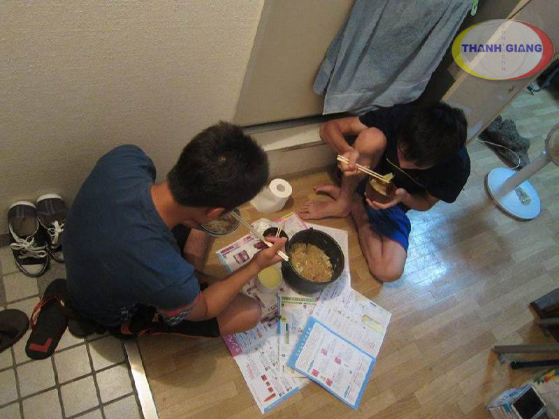

Du học Hàn Quốc: Có nên hay không?

Hàn Quốc là nước có nền giáo dục xuất sắc trong khu vực châu Á cũng như luôn đứng top trong các nước có đầu tư cao về giáo dục. Do đó, du học Hàn Quốc là mong muốn của nhiều bạn trẻ nhưng ở một góc độ nào đó, nó cũng chẳng hề dễ chịu như những gì bạn vẫn tưởng tượng. Sau đây là những lý do bạn nên đi du học Hàn Quốc và những điều bạn cần cân nhắc trước khi quyết định...Xem thêm
Tổng quan chi phí du học Nhật Bản 2018

Thông tin tư vấn và chia sẻ kinh nghiệm du học Nhật trung thực, khách quan, chính xác. Hỗ trợ làm hồ sơ, thủ tục chuyên nghiệp - đạt Visa trên 90%....Xem thêm
Du học Nhật Bản khóc cho một kiếp người
Du học Nhật Bản: Một chuyến hành trình dài từ Tokyo tới Fukuoka đã chỉ cho Thanh Giang thấy rất nhiều điều về cuộc sống thực tế của du học sinh vừa học vừa làm tại Nhật Bản hiện nay. Thanh Giang xin được viết bày này với góc nhìn của Thanh Giang để chia sẻ với tất cả các bạn đang tìm hiểu về chương trình du học Nhật Bản hiểu rõ để các bạn suy nghĩ thật kỹ trước khi quyết định và cũng một phần nói lên nỗi lòng của du học sinh tự túc tại Nhật Bản hiện nay....Xem thêm
Welcome to StudyHard!
No one lives long enough to learn everything they need to learn starting from scratch. To be successful, we absolutely, positively have to find people who have already paid the price to learn the things that we need to learn to achieve our goals. ( Brian Tracy )